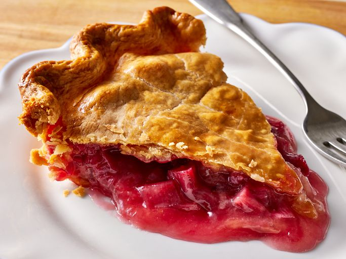

Fresh Rhubarb Pie
Go Back to the Homepage

Description
This rhubarb pie is simply delicious! My mom used to grow rhubarb in her backyard, and when her rhubarb was ripe, what great pies she made!
Ingredients
- Sugar: The sweetness from the white sugar perfectly balances the tart rhubarb.
- Flour: All-purpose flour lends structure and helps hold the filling together.
- Ruharb: You'll need four cups of chopped fresh rhubarb.
- Butter: Butter adds richness and moisture to the fruity filling.
- Pie crust: Use a store-bought double pastry crust or make your own at home.
Steps
- Combine the flour and sugar in a bowl. Line the pie plate with one pastry crust.
- Sprinkle the bottom with ¼ of the flour-sugar mixture.
- Place rhubarb on top, then top with remaining sugar.
- Dot with butter and cover with the remaining crust.
- Bake until the filling is bubbly and the crust is golden brown.